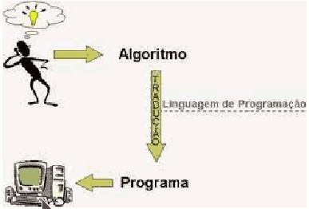

En matemàtiques es defineix algorisme de la manera següent:
"Conjunt ordenat d'operacions sistemàtiques que permet fer un càlcul i trobar la solució d'una mena de problemes".
En matemàtiques, lògica, ciències de la computació i disciplines relacionades, un algorisme és un conjunt prescrit d'instruccions o regles ben definides, ordenades i finites que permeten dur a terme una activitat mitjançant passos successius que no generen dubtes a qui haja de fer aquesta activitat. Donats un estat inicial i una entrada, seguint els passos successius s'arriba a un estat final i s'obté una solució. A una mateixa entrada, sempre s'obté la mateixa eixida.
En termes de programació, un algorisme és una seqüència de passos lògics que permeten solucionar un problema.
Els elements clau d'un algorisme inclouen:
- Entrada : els algorismes prenen dades d'entrada, que poden ser valors numèrics, text, imatges o altres tipus d'informació necessaris per a fer una tasca.
- Processament : les dades d'entrada es manipulen i processen mitjançant una seqüència de passos definits. Aquests passos poden incloure operacions matemàtiques, comparacions, presa de decisions i altres accions específiques.
- Eixida : al final del procés, un algorisme produeix resultats o dades d'eixida que representen el resultat de la tasca o el problema resolt.
Cal no confondre algorisme amb programa informàtic. L'algorisme és l'expressió teòrica del que finalment executarà en l'ordinador el programa informàtic. Moltes vegades, si el programa a resoldre requereix una certa dificultat, en un primer moment s'especificarà l'algorisme corresponent i finalment, a partir d'aquest algorisme es desenvoluparà el corresponent programa en un determinat llenguatge de programació.

Una bona eina per a la creació d'algorismes és PseInt.
Vídeo: https://www.youtube.com/watch?v=FvibfpSVFBw&list=PLAzlSdU-KYwXllXcUCW-BylQZemcDV798
Veurem dues maneres de definir algorismes: pseudocodi i Ordinogrames.